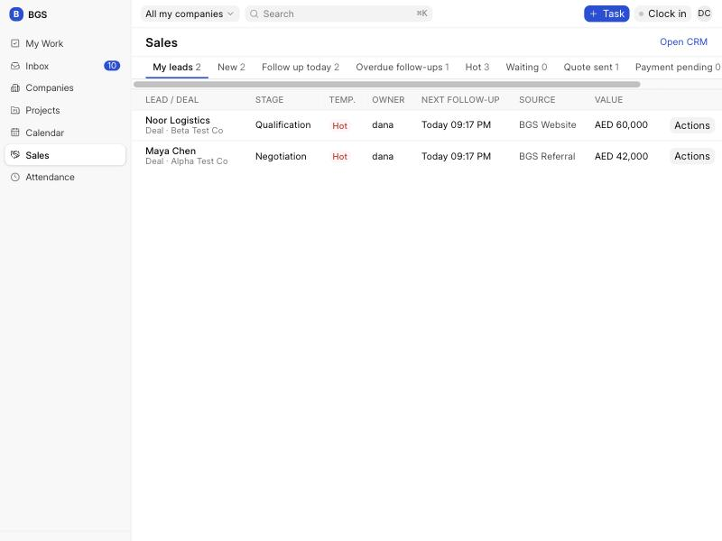
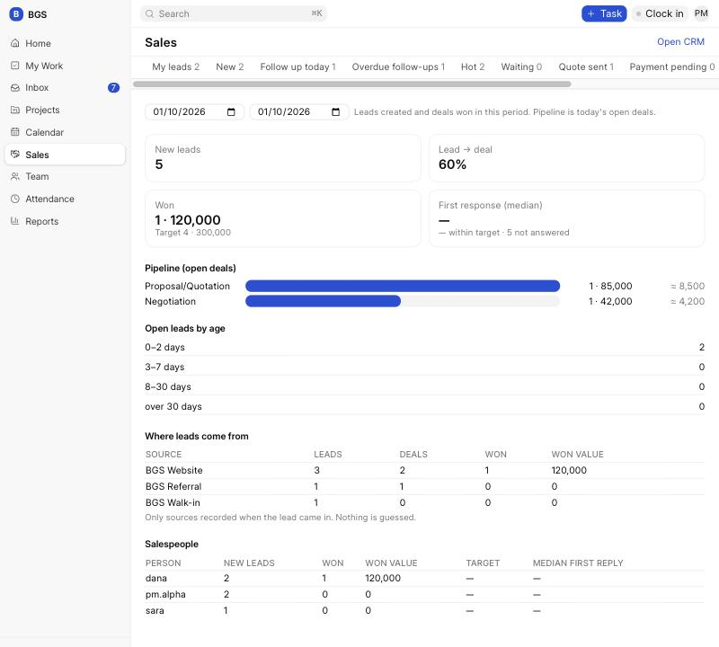
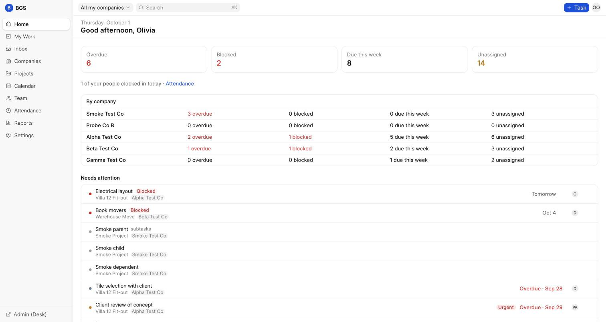
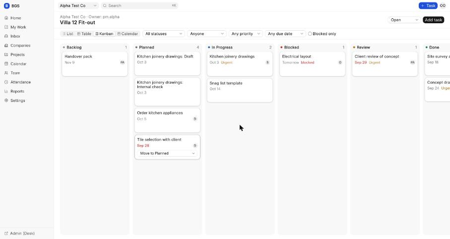
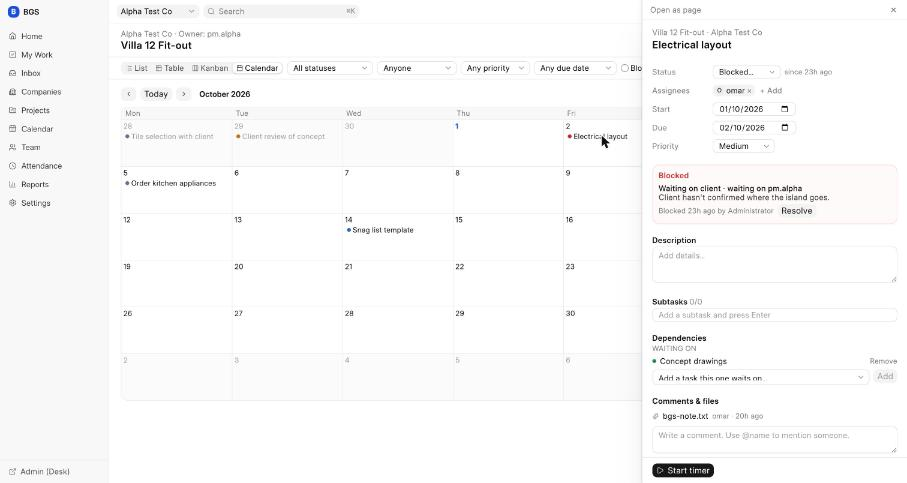
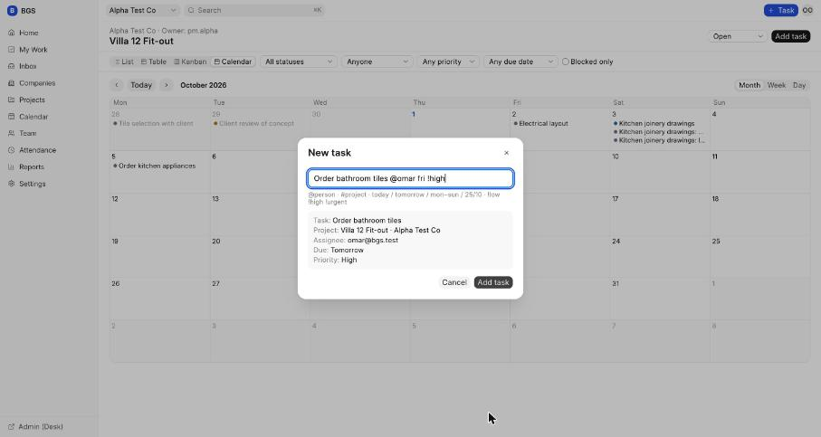
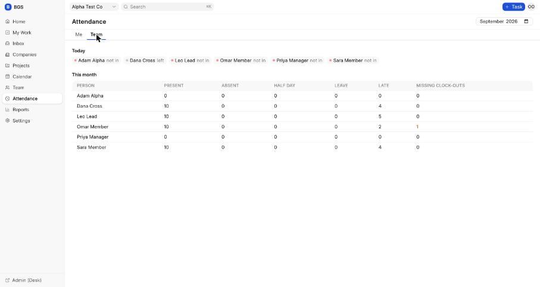
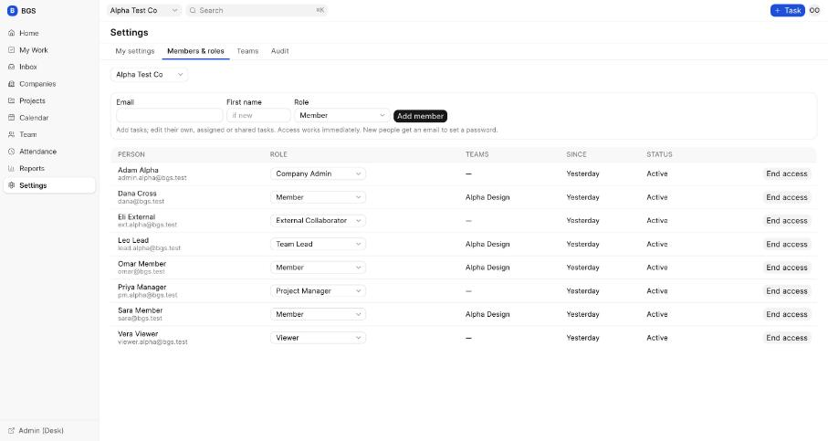

The first two parts of the BGS operating system are built on Frappe and running on a development machine. Phase 1 (daily work) is accepted. Phase 2A (sales) is finished and waiting for approval. This page shows what was built so you can approve it or ask for changes.
Projects, tasks, blockers, timer, clock-in, dashboards.
Leads, deals, pipelines, routing, quotes, sales dashboard.
Portfolios, milestones, goals, workload, approvals.
Send your answer to the project owner. The screenshots use made-up test companies (Alpha, Beta, Gamma Test Co) and made-up people. No real BGS data is in the system yet.
Built on Frappe CRM. BGS adds what Frappe CRM doesn't have: company separation, campaign tracking, lead scores, duplicate checks, website forms, routing, targets and a simple sales to-do list.
Every lead, deal, organization, contact, note and call belongs to one company. Sales people see all leads of their own company and nothing from other companies, including inside the CRM screens.
Sales Rep or Sales Manager, set per company and separate from the person's project role.
Everyone starts with the same deal stages. Company admins can add stages only their company uses, such as Payment Pending.
Google and Meta ad details, landing page and form IDs are saved when the lead arrives, copied to the deal and never edited or guessed.
Each company sets simple rules (has a phone +15, came from a referral +30). Leads show Hot, Warm or Cold and the reasons behind the score.
A new lead with the same email or phone as an existing one in the same company is flagged, not merged.
The website sends leads straight in with a secret key per form. Wrong keys are refused and the same form sent twice makes one lead.
New leads are shared out among each company's sales people in turn.
Make an ERPNext quotation from a deal. A won deal becomes one ERPNext customer, reused next time, and is handed over for delivery.


Projects and tasks for all BGS companies in one place, with time and attendance. Staff see a short, simple menu; managers and owners see more.
Managers see overdue, blocked, due this week and unassigned. Staff see their own tasks for today, the week and later.
List, Table, Board (drag cards between stages) and Calendar (drag to change dates).
A blocked task records what kind of blocker, who must clear it and why. That person is notified and the blocked time is kept.
Press C and type one line, such as "Order tiles @omar #villa-12 fri !high".
One timer at a time, filed into weekly timesheets. Clock in and out, monthly attendance, missed clock-outs. No location or screen tracking.
Access is given per company and role. Nothing is deleted, and every change is logged.






The system currently runs on a development machine only, with test data. Reviewers see it through this page. Putting it on a server for the team, with real company data, is a later step that needs its own approval.